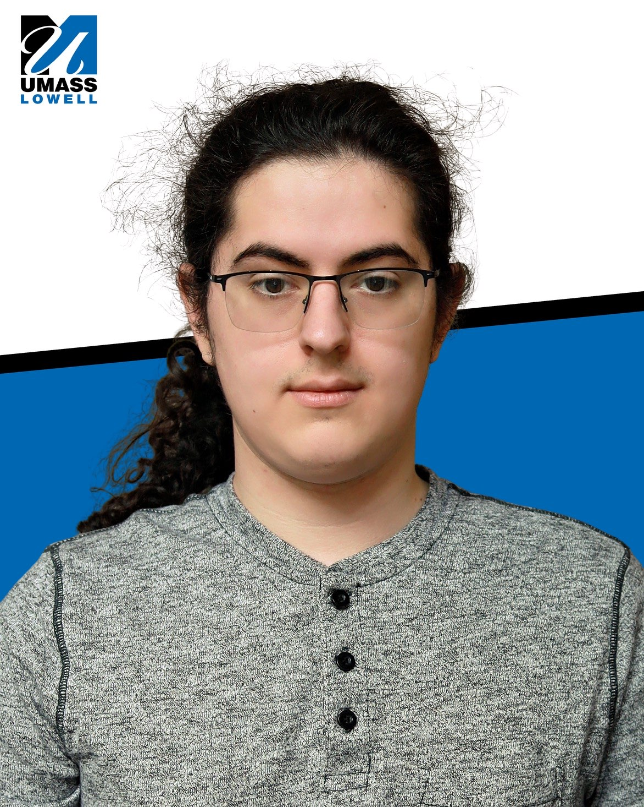

Hello! my name is Riley Stevens, I am a senior at University of massachusetts lowell. I made this website for both fun and to fulfill the requirements for the HW 1 assignment in GUI Programming. If you dont remember from my introduction, I play piano, and like to cook. I struggle alot with writing in english but excel at writing code. The photo on the left looks kinda off because the camera was low to the ground and I am tall.
if you need to reachout for whatever reason you can contact me at riley_stevens@student.uml.edu